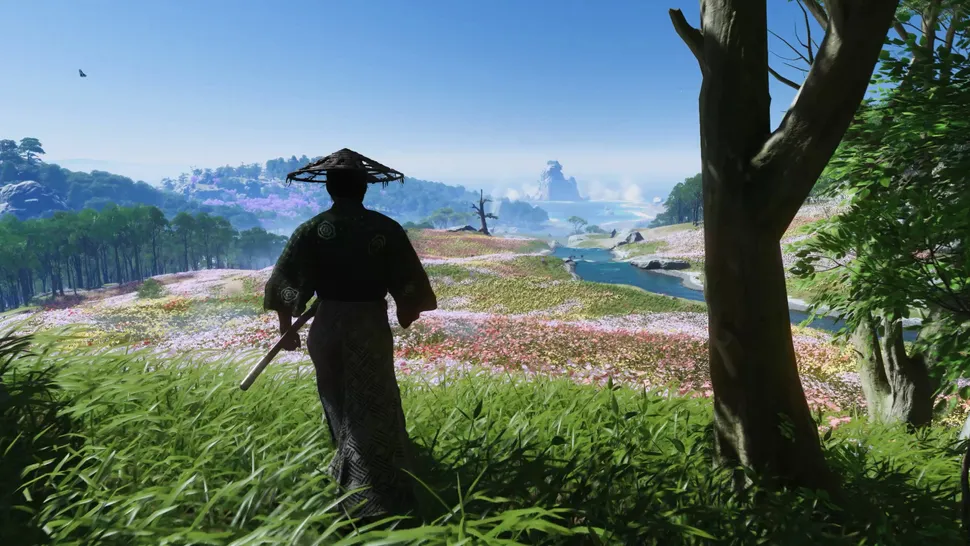
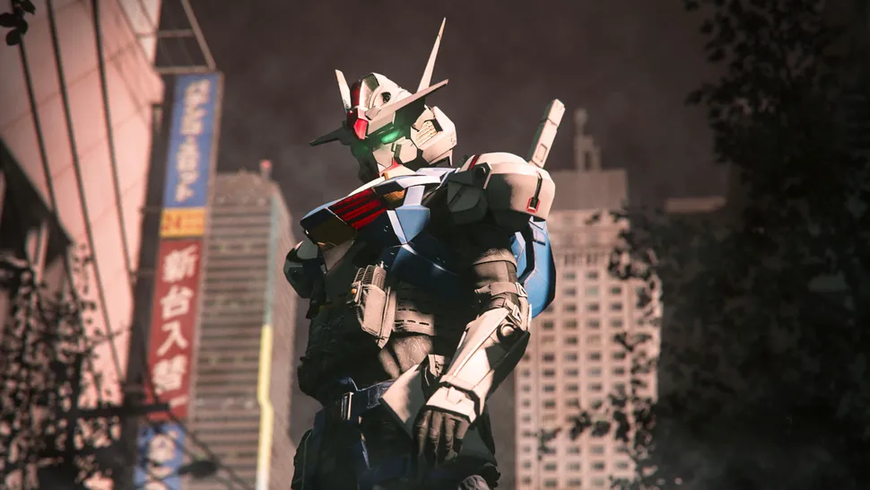

Recent News👀
Assassin's Creed Shadows isn't even out for 6 months, but Ghost of Tsushima ate its lunch 4 years ago and the superb PC Director's Cut rubs salt in the wound
Posted by John Doe
I've just finished writing PC Gamer's Ghost of Tsushima Director's Cut review and the experience has confirmed one thing very clearly—right now, I couldn't be less excited for Assassin's Creed Shadows. If Ubisoft had dropped Shadows 10 years ago, when gamers first started asking for a Land of the Rising Sun outing for the series, it might have set my heart ablaze, but in 2024? Not happening. The problem? Ghost of Tsushima, as my replay of the game has driven home, already did an Assassin's Creed-style game set in Japan four years ago. And it set the bar so high, improving on so many of the typical flaws found in the long-running Ubisoft series and delivering a game of such immense class, that I can't see Shadows even approaching it, let alone improving on it.
Call of Duty's Gundam crossover has fans frothing at the mouth, but looks aren't everything
Posted by Elie Gould
Apart from reviving a once-dead character, Call of Duty: Modern Warfare 3 and Warzone season 4, which is about to kick off next week, includes a new crossover—Gundams are coming to CoD. Call of Duty tweeted out a short video to announce the collaboration, consisting of a shadow of a Gundam against a building with neon signs. It's not much, but it's still pretty cool for mecha fans out there. Plenty of players have voiced excitement about this new crossover, with a couple even saying that this may even convince them to pick up CoD: "Between this and the Path to Nowhere crossover they did, I'm convinced someone is trying to get me specifically to play CoD," one player says in a Reddit thread. I'll be the first to admit that seeing the mecha suits in Call of Duty is really cool, but there is the issue of the size. The crossover has human-sized Gundams fighting against other operators, and while the official line is that you're cosplaying as a Gundam and that it's effectively a suit of armour that lets you "awaken your Newtype powers," I can't help but imagine that the mecha is being controlled by tiny people.